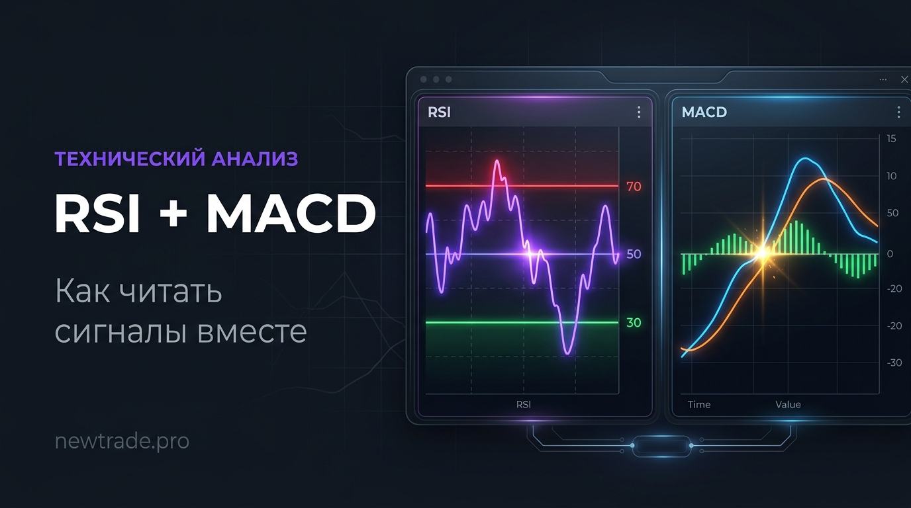

Как читать RSI и MACD вместе: связка, которую используют профи

Большинство трейдеров знают RSI и MACD по отдельности. Они видели разборы в YouTube, читали статьи, пробовали на демо-счёте. Но использовать их вместе — совсем другая история. Именно в связке эти два инструмента превращаются из простых индикаторов в полноценную торговую систему.
В этой статье — конкретная механика: как RSI и MACD дополняют друг друга, какие сигналы стоит брать, а какие игнорировать, и как выглядит реальная точка входа по этой связке.
RSI измеряет скорость и силу движения (импульс). MACD показывает направление и смену тренда. Вместе они отвечают на два главных вопроса трейдера: «Куда движется рынок?» и «Не слишком ли поздно входить?»
RSI: что он на самом деле измеряет
RSI (Relative Strength Index) — это осциллятор от 0 до 100, разработанный Уэллсом Уайлдером в 1978 году. Он сравнивает средний размер растущих свечей со средним размером падающих за выбранный период (обычно 14 баров).
Формула проста по смыслу:
RSI = 100 – (100 / (1 + RS)), где RS = средний прирост за N периодов / среднее падение за N периодов
Что это означает на практике:
- RSI выше 70 — актив перекуплен. Покупатели «выдохлись», возможен откат или разворот
- RSI ниже 30 — актив перепродан. Продавцы на исходе, возможен отскок вверх
- RSI в зоне 40–60 — нейтральная территория, тренд без явного перегрева
- RSI выше 50 — преобладает бычий импульс; ниже 50 — медвежий
Главная ловушка RSI — воспринимать значение выше 70 как немедленный сигнал на продажу. В сильном тренде RSI может «висеть» в зоне перекупленности неделями. Это не баг — это фича.
Профессионалы используют RSI не только для уровней, но и для поиска дивергенций — ситуаций, когда цена и индикатор движутся в разные стороны. Это один из самых надёжных разворотных сигналов в техническом анализе.
MACD: трендовый фильтр с сигнальной линией
MACD (Moving Average Convergence Divergence) — трендовый индикатор, созданный Джеральдом Аппелем. Состоит из трёх элементов:
| Элемент | Что показывает |
|---|---|
| Линия MACD | Разница между EMA(12) и EMA(26). Отражает силу и направление тренда. |
| Сигнальная линия | EMA(9) от линии MACD. Сглаживает сигналы, фильтрует шум. |
| Гистограмма | Разница между линией MACD и сигнальной. Визуализирует силу расхождения. |
Ключевые сигналы MACD:
- Пересечение линий: MACD пересекает сигнальную снизу вверх → покупка; сверху вниз → продажа
- Пересечение нулевой линии: MACD выше нуля = бычий тренд; ниже = медвежий
- Дивергенция: цена обновляет хай, MACD — нет → слабость тренда, возможен разворот
- Гистограмма сокращается: тренд теряет силу, возможна смена направления
MACD — запаздывающий индикатор. Он строится на скользящих средних, которые всегда отстают от цены. В боковом рынке MACD даёт много ложных сигналов. Именно здесь RSI приходит на помощь — как фильтр качества сигнала.
Как работает связка RSI + MACD: механика
Идея связки проста: MACD указывает направление и момент входа, RSI подтверждает, что рынок не перегрет. Если оба индикатора согласны — сигнал сильный. Если противоречат — лучше пропустить.
Условие сильного сигнала на покупку (ЛОНГ)
- MACD пересекает сигнальную линию снизу вверх (бычье пересечение)
- Пересечение происходит ниже нулевой линии — особенно сильный сигнал
- RSI находится в зоне 30–50 — актив не перекуплен, есть запас хода вверх
- RSI направлен вверх, подтверждая нарастающий бычий импульс
MACD(12,26,9) даёт бычье пересечение под нулевой линией • RSI(14) = 38 и разворачивается вверх • Цена отскакивает от уровня поддержки EMA 50 → Все три условия выполнены — высоковероятная точка входа в лонг
Условие сильного сигнала на продажу (ШОРТ)
- MACD пересекает сигнальную линию сверху вниз (медвежье пересечение)
- Пересечение происходит выше нулевой линии — классический сигнал медвежьего разворота
- RSI находится в зоне 50–70 — актив не перепродан, есть куда падать
- RSI направлен вниз, подтверждая нарастающее давление продавцов
MACD даёт медвежье пересечение над нулевой линией • RSI(14) = 64 и разворачивается вниз • Цена не смогла обновить предыдущий максимум (double top) → Три подтверждения — сильный сигнал на шорт
Дивергенция RSI + MACD: двойной сигнал разворота
Дивергенция — это ситуация, когда цена и индикатор движутся в противоположных направлениях. Она говорит о том, что текущее движение теряет силу и может развернуться. Когда дивергенцию показывают одновременно RSI и MACD — это один из самых надёжных разворотных сигналов в техническом анализе.
Бычья дивергенция (разворот вверх): Цена делает новый минимум (Lower Low), а RSI и MACD — нет (Higher Low). Сигнал: продавцы слабеют, покупатели начинают доминировать → готовимся к лонгу.
Медвежья дивергенция (разворот вниз): Цена делает новый максимум (Higher High), а RSI и MACD — нет (Lower High). Сигнал: покупатели выдыхаются, продавцы берут контроль → готовимся к шорту.
Дивергенция — это не сигнал немедленного входа. Это предупреждение. Дождитесь подтверждения: пересечения MACD, пробоя уровня или паттерна на свечах.
Когда НЕ торговать по этой связке
Даже самая хорошая связка индикаторов даёт ложные сигналы. Умение распознать «мусорный» сигнал важнее умения найти хороший.
- Рынок в боковике (флэт). MACD будет давать хаотичные пересечения. Проверяй ADX: если ниже 20-25 — тренда нет, связка не работает
- Сигнал MACD слишком далеко от нулевой линии. Чем дальше пересечение от нуля, тем больший путь уже пройден. Входишь поздно — стоп большой, потенциал маленький
- RSI уже в экстремальной зоне. Если MACD дал сигнал на покупку, а RSI = 72 — рынок уже перегрет. Лучше пропустить
- Новостной фон. За 30 минут до важных данных (ФРС, NFP, CPI) любой технический анализ бессилен
- Таймфрейм меньше 15 минут. На 1M и 5M слишком много шума. MACD и RSI на малых тф дают 70%+ ложных сигналов
Смотри на MACD и RSI на старшем таймфрейме (4H или 1D) для определения направления. Входи на младшем (1H или 15M). Торгуй только в сторону старшего тренда — так количество ложных сигналов сокращается в разы.
Пошаговый алгоритм входа по связке RSI + MACD
Используй этот чеклист перед каждой сделкой:
- Определи тренд на старшем таймфрейме (4H / 1D). Где находится цена относительно EMA 50 и EMA 200?
- Проверь MACD на рабочем таймфрейме. Есть ли свежее пересечение? В какую сторону? Где относительно нуля?
- Проверь RSI. Не перекуплен/не перепродан? Подтверждает ли направление сигнала MACD?
- Найди точку входа. Идеально — на ретесте уровня после пересечения MACD. Не гонись за ценой
- Установи стоп-лосс. За ближайший значимый уровень или по ATR (1,5–2 × ATR от точки входа)
- Определи тейк-профит. Минимальное соотношение риск/прибыль — 1:2. Лучше 1:3
- Запиши сделку в журнал. Через 50+ сделок ты увидишь, работает ли связка на твоём активе
Вывод
RSI и MACD — это не магия и не «вечный прибыльный сигнал». Это инструменты фильтрации: они помогают отсеивать плохие точки входа и находить хорошие. RSI показывает, есть ли запас хода. MACD — что тренд уже начал меняться.
Вместе они работают именно потому, что измеряют разные вещи. Один — импульс, другой — тренд. Когда оба согласны, вероятность правильного входа существенно выше, чем при использовании любого из них по отдельности.
Следующий шаг — автоматизировать эту связку. Торговый робот не устаёт, не пропускает сигналы и не входит в позицию «на эмоциях». Именно это делает алгоритмическая торговля — и именно так работает инструментарий newtrade.pro.
📊 Хотите автоматизировать стратегию RSI + MACD?
На newtrade.pro — готовые индикаторы для TradingView, торговый робот и копитрейдинг на Bybit. Проверенные инструменты для тех, кто торгует серьёзно.
Перейти на newtrade.pro →